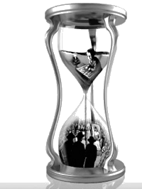
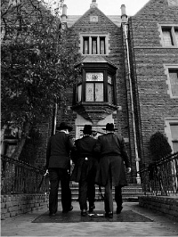

From Yeshiva to the Chuppa
Many people around the world, Lubavitch and non-Lubavitch alike, are talking about the “Age for Marriage Guidelines” pamphlet that they received in the mail or viewed online. * Menachem Ziegelboim and Avrohom Rainitz follow up with the story behind the story.

Beis Moshiach was told that the mashpiim who signed it sat at two or three lengthy meetings at which they discussed the contents of the message as well as the wording in order to be precise and clear. Then corrections were made and all necessary additions were added until the final version was complete.
The letter of the rabbanim was written by a well-known Chabad rav who serves as rav of a large city. It was signed by a long list of rabbanim. They address “leaders of Lubavitch communities in every location,” and make it clear that this step was taken after discussion with mashpiim and educators who are familiar with the issues from up close.
THE CALL OF THE HOUR
Rabbi Yochanan Gurary, rav of Cholon and member of the Beis Din Rabbanei Chabad in Eretz Yisroel, in a conversation with Beis Moshiach, said:
“The impetus came from Anash – parents of children of shidduchim age – who asked rabbanim to get involved. Boruch Hashem, there are many good bachurim who are sitting and learning, but there are also those who have finished the prescribed course of learning and don’t continue learning. Their parents are concerned about this. There is no point in bachurim just ‘hanging around,’ which leads to undesirable things.”
Beis Moshiach discussed this with a member of Anash who was the liaison between the rabbanim and mashpiim and facilitated the publishing of the call to the public. He worked behind the scenes, attended meetings, and closely followed the developments of the entire process.
“The rabbanim and mashpiim are addressing this issue in response to the situation that has arisen in recent years regarding bachurim who complete the prescribed course of learning. In recent decades, the prevalent view was that a bachur needs to be 23-24 before he can marry. The time has come to drop this way of thinking and get back to an outlook based on Torah, Chassidus and the Rebbe’s horaos.
“As was quoted in the brochure, Chazal say 18 is the age for marriage. The Gemara adds that ‘until [the age of] 20, Hashem sits and waits for a man to marry; once he reaches 20 and is not married, He says: Let his bones rot!’”
The Shulchan Aruch states: “It is a mitzva for every man to marry at age 18 … in no event should he pass 20 without getting married. He who has passed this age and does not desire to marry is forced by beis din to marry in order to fulfill the mitzva of Peru U’Revu (Be fruitful and multiply).”
Getting married at age 23-24 has long been the age for marriage. Why the need for a change now?

“Of course there are many bachurim who continue to sit and learn, but there are still plenty of others who are not keeping the s’darim and are reducing their hours of learning. Some of them are not in yeshiva altogether, although they are likely to be involved in good things such as helping shluchim.
“We were taught that the moment a bachur enters Tomchei T’mimim, he is under the responsibility of the hanhala until the chuppa. The place of a Tamim is in Tomchei T’mimim and it is from there that he goes to get married, as they tell about a bachur who went to his mashgiach to ask permission to leave seider for his chuppa. Concepts such as finishing yeshiva or leaving yeshiva did not exist.”
CHANGING PUBLIC OPINION
Rabbanim consulted with roshei yeshivos and mashpiim from various Chabad yeshivos. They came to the conclusion that it is necessary to move back the age for marriage so there will be no break between learning in yeshiva and establishing a home. Practically speaking, bachurim should start looking into shidduchim and get married starting at age 20.
In a conversation with Rabbi Shloma Majeski, well-known mashpia in Crown Heights and one of those who signed the letter, he said that when he returned from shlichus in Australia, he and all the members of the group had yechidus. In this yechidus, the Rebbe spoke to them about shidduchim and said that those who, because of their age or feelings, are ready for shidduchim should not get involved in making inquiries; their parents should take care of the details. Only when it becomes necessary to meet a girl should they go, and the meeting should take place only after s’darim.
Most of the bachurim in that yechidus were 20-21. Maybe one of them was 22, and yet the Rebbe addressed this topic. It seems, concludes Rabbi Majeski, that it is appropriate to talk about shidduchim at this age.
Rabbi Pinye Korf, mashpia in Oholei Torah, mentioned that in the sicha of 14 Kislev 5714, the Rebbe spoke about how despite the preciousness of the time before marriage, the ultimate goal is the time after marriage. This differentiates Chabad yeshivos and Litvishe yeshivos. In Litvishe yeshivos, the students don’t get married until later while in Lubavitch, in general, and especially in Yeshivos Tomchei T’mimim, the Rebbeim instituted that at age 20 one needs to look into shidduchim, since “He did not create it [the world] to be empty but to be settled.”
[It should be noted that in the hanacha that was printed in Toras Menachem, it says that getting involved in shidduchim should be done “in the early 20’s,” but Rabbi Korf, who was present at the farbrengen, remembers that the Rebbe spoke of age 20 as the age for starting shidduchim in Chabad.]
In conversations we had with some rabbanim and mashpiim who signed the letter, we learned that some of them think changes should be made in the yeshiva curriculum so that all bachurim can marry at a younger age. However, not all rabbanim and mashpiim think so, and as things stand now the conditions are not suitable for such a monumental change. This is why, in the rabbanim’s letter, there is just a general call to move back the age for marriage “to an age earlier than what we are accustomed to now,” without specifying an actual age.
In the mashpiim’s letter too, even when they cite 20 as the proper age for marriage, they quote the Shulchan Aruch which says, “If a person occupies himself in Torah study, doing so assiduously, and fears to get married for he will then be preoccupied in earning a living and thereby desist from learning Torah, he may tarry.” They qualify what they say and note, “If they are truly sitting and learning assiduously, there is reason to delay marriage for another year or two.” In other words, someone who wants to continue learning within the yeshiva environment can delay marriage until 21-22. However, as soon as he finishes his yeshiva learning, he should look into shidduchim.
One of the mashpiim who signed the letter explained that aside from the general encouragement to move back the age for marriage, there are two kinds of bachurim that the letter is addressing. One type consists of good, Chassidishe bachurim who don’t have the head for learning and have a hard time continuing their learning on a post-graduate level. For their own good, it is preferable that they marry at age 20, rather than continuing in yeshiva simply due to societal expectations. The other is the bachurim, 20 and up, who left the environment of the yeshiva. The way things are now, they don’t consider marriage because it is not usually done. So they look for something with which to occupy themselves and end up traveling the world or even going to college, r”l. Certainly, for their spiritual and material welfare, these bachurim should marry earlier while still under the influence of their time spent in yeshiva.
IT ALL DEPENDS ON PUBLIC OPINION
Many of Anash who saw the letter of the rabbanim and mashpiim wondered whether the status quo can be changed or if it’s a lost cause. The mashpiim believe things can definitely be changed. In their letter, they maintain that it all depends on the community’s stance. “As soon as parents realize that there is no valid reason to delay the time of marriage and they will begin urging their sons to listen to shidduch suggestions, marriages will begin taking place at an earlier age.”
Rabbi Yochanan Gurary says this is only the first push. “It will take time until matters are fully corrected, but this is definitely a start. Everybody understands that there is a problem that requires a solution. I believe that with time, it will work its way into the Chabad community.”
Rabbi Yosef Yeshaya Braun, mara d’asra, member of the Crown Heights beis din, who also signed the letter, thinks the situation can definitely be changed. It all depends on a few “Nachshons” who will get married younger and people will see that it’s possible.
“After 27 Adar 5754, when the Rebbe no longer responded to questions, bachurim were unwilling to get married without the Rebbe’s answer. For a long period of time there were no weddings in Chabad. It was an abnormal situation, because from a halachic perspective, perhaps one should not refrain from marrying under such circumstances. However, this was the situation because of Chassidishe hergesh.
“This is the way it was until one bachur decided not to delay anymore and he became a chassan. At first, everyone was shocked by this. He had done what nobody else was doing. But everybody else began doing shidduchim soon after.
“The same is true for getting married at younger ages. As soon as some bachurim will get married at 20, it will change public opinion. A bachur who gets married at 20 will no longer be an aberration.
“When Chazal established 18 as the age for marriage, they certainly knew the inner workings of the psyche of man, and they assessed that at that age he is mature enough and ready for married life. By the way, it’s interesting that according to Rashi, Chazal’s edict is hinted at in the Torah. From the beginning of the Torah until the pasuk, ‘for from man this one [woman] was taken,’ the word ‘Adam’ appears eighteen times.
“When you look at all this with a Torah perspective, what we are talking about here is a mitzva (Peru U’Revu) in which a man is obligated from the age of 13, like all mitzvos of the Torah. That is why it says in Shulchan Aruch: ‘One who marries earlier at 13 is performing the mitzva in the best possible way.’
“What is the reason that we don’t marry at 13, but from age 18 and above? The Alter Rebbe explains that ‘in those days [the days of Chazal] they would learn Mishna for five years with boys aged 10-15 and then five years of Talmud, which covers the reasoning of the rulings in the Mishna. If he was not married by the age of 20, he would be transgressing a positive mitzva of the Torah of Peru U’Revu. The reason that the beginning age is 18 is because even after marriage he can learn for two or three years without excessive distractions before many children are born.’
“That means that actually, we should get married at 13, but Chazal allowed us to postpone fulfilling this mitzva until 18-20 because of Torah study which generally supersedes the fulfillment of other mitzvos.
“In order to show how clear it is from Chazal that one should marry by age 20, I will cite an interesting question that appears in the poskim. What is the Halacha regarding someone who vows not to marry until he is over 20? Many poskim hold that this vow is void since he vowed not to do a mitzva!
“Those who are interested in hearing the opinion of marriage experts will be surprised to find out that many of them are of the opinion that the age for marriage should be earlier than commonly accepted. At meetings we held before sending out the letter, some marriage experts addressed the claim that twenty year old bachurim are not mature enough for marriage. They said this age is eminently suitable for marriage. They stressed that when someone is overly ‘ripe,’ he or she starts to spoil. Older bachurim become very picky, which makes it hard for them to marry. We know that shidduchim are from Heaven and we need a lot of simple faith. Of course, you have to make inquiries so that the shidduch makes sense to you as well, but you need to leave a lot of room for faith. As far as that goes, it is far more preferable if the bachurim are young.”
Rabbi Braun referred to bachurim in the Chassidishe communities surrounding Crown Heights in order to prove that 20 year old bachurim are ready for marriage:
“Most of those bachurim are married by 20. Despite their young age, they have good marriages (the divorce rate is much lower than the population at large), and they are also successful when it comes to parnasa. What’s good for them is good for us, and there is no reason why a Lubavitcher bachur should be less mature for marriage than his counterpart in a nearby community.
“Improvements can always be made, and along with this call for getting married at younger ages it would be a good idea for someone to take up the challenge and arrange for the necessary guidance in preparing the bachurim for marriage.”
LEARNING FOR SMICHA
The Rebbe wants bachurim to receive smicha for rabbanus before getting married. It says in Seifer HaMinhagim (p. 75): “The chassan should try to arrange his learning so that he receives smicha for rabbanus before marrying. Questions arise in a Jewish home and one cannot always ask a rav; the chassan needs to be the ‘rav of his house.’” This is what the Rebbe said in a sicha of 24 Teves 5712, “This practice is an instruction for the public – they need to receive Smicha L’Horaa before the wedding.”
We asked Rabbi Y. Y. Wilschansky, rosh yeshiva of the Chabad yeshivos in Tzfas, Chaifa and Natzrat Ilit what he thinks of the idea of combining learning for smicha within the yeshiva curriculum so that those bachurim who finish the yeshiva track can marry right away. His response was:
“This suggestion is outrageous. It is not meant to be part of the yeshiva curriculum. We seek to establish bachurim who are lamdanim, who will focus on Nigleh and Chassidus, Gemara and mefarshim. Even a bachur in shiur Gimmel in yeshiva g’dola is still lacking a great deal in terms of developing his spiritual image. Learning for smicha will adversely affect lamdanus both in Nigleh and in Chassidus. Bachurim have to know how to learn and they must learn as much as possible. Should we trade this learning for the sake of a writ of ordination? In general,” he said bitterly, “nowadays, everything has been turned into ‘tracks.’ So-and-so finished this track and started that track, etc. It’s terrible.”
Nevertheless, we heard that in certain yeshivos they are seriously considering the matter and are talking about possibly having a special seider to learn for smicha within the yeshiva g’dola/zal program. Some rabbanim and askanim are even looking into the possibility of opening a smicha program for 18-19 year olds to enable them to marry at 20, right after receiving smicha.
Those hanhalos that want to offer a smicha program for younger aged bachurim will need to investigate and consider what we heard from a number of people who learned in 770 in the 60’s and 70’s. It was known that the hanhala of the yeshiva did not allow them to start learning for smicha before age 21. Bachurim who asked were refused. Even after age 21, the hanhala did not give the go-ahead right away but would first ask the Rebbe for his approval. Since, in those days, the members of the hanhala would have yechidus frequently and would receive instructions directly about how to handle their talmidim, the men we spoke to said that surely this was a horaa from the Rebbe.
In conclusion, how do we implement this change?
We asked one of those behind the initiative this question. He said:
“Obviously, it’s a process that will take time, but with Hashem’s help and with our joint efforts, we will be successful. Our first priority is to delegitimize postponing marriage. When a bachur doesn’t want to get married but wants to pass the time, even in good ways, that’s forbidden.
“Bachurim need to know that as soon as they finish the yeshiva program, they must look into shidduchim so they will enter into marriage directly from the world of the yeshiva and not from a secular atmosphere r”l.
“Parents need to urge their sons to get married earlier. We will keep up the publicity campaign so that the roshei yeshiva and mashpiim will join forces in educating the students towards that goal.
“With all of us making an effort we can advance the age for marriage and bring about all the positive benefits that accrue, thereby giving nachas to the Rebbe.”
BOX 1
Mrs. Ruth Mifi, a therapist who helps many families with shalom bayis issues, relationships and preparing for married life, was asked:
Do you think that bachurim nowadays are ready to get married at younger ages?
“The younger the bachurim, the more connected they are to yeshiva, the more pure they are; and this is a keili for bracha. At a younger age, bachurim are more in a mindset of kabbalas ol. At this younger age, one can spare himself a lot of the potential difficulties in getting to the chuppa. There are fewer conflicts with parents regarding shidduchim and details of the wedding.
“The more distant one is from the source, the less innocent sincerity there is. The older a bachur gets, the more he loses that innocent sincerity and the title of Tamim (in its literal sense too). When these boys marry later, it becomes more complicated. I hope that this call of the rabbanim will be accepted by all of Anash with kabbalas ol for the rabbanim whom the Rebbe appointed.”
BOX 2:
RESERVATIONS
One of the advanced Gemara teachers in a Chabad yeshiva in Eretz Yisroel with whom we spoke accepted the “call of the hour,” but not fully. He has some reservations.
Rabbanim and mashpiim are asking Anash to start looking into marrying off their sons at a younger age. What’s the problem with that?
“I think it’s too universal. As someone who knows the inner world of bachurim, I think each case should be assessed separately. I definitely agree with the basic idea, since nowadays there is a widespread belief among bachurim that it is unnecessary to marry young. This is why the first bachurim in every class hesitate to make the decision. Bachurim must drop this negative attitude about early marriage. If just one bachur gets married earlier because of this call of the rabbanim and mashpiim and doesn’t just hang around, it would be worth it. In fact, I have no problem with this becoming a new trend.
“However, that’s a far cry from turning this into a ‘mivtza’ and a governing policy in Chabad that we have to implement. There are enough bachurim who definitely have what to keep them busy until age 23. Some bachurim prefer to stay in 770 another year after K’vutza. We know that this year is an ‘absorption year’ even more than the first year. There are bachurim who go on shlichus to various yeshivos. They keep in touch with their mashpia and their time is used well.”
So what do you think?
“I believe that it’s not right to tell a bachur who just finished K’vutza to return to Eretz Yisroel and get married right away. A bachur who knows he can still be productive while under the guidance of his mashpia should not rush back and get married.” (In every K’vutza there are about 200 bachurim, sometimes more).
“The dozens of bachurim who do not continue in a yeshiva setting should get married, but at least 100 of them are very serious bachurim for whom there is good reason for them to remain and continue learning. They should study for smicha and learn plenty of Gemara and Chassidus or even go on shlichus to yeshivos.”
But the Rebbe writes explicitly in his letters in favor of early marriage!
“True, and yet the Rebbe never turned this into a shita. The fact is that throughout the years, many groups of bachurim learned in 770 well past the age of 22-23. They sat and learned and the Rebbe never asked them to leave yeshiva and get married.”
“Furthermore, the Rebbe himself sent bachurim on various shlichuyos, and not only in the summer months on Merkos Shlichus. Groups of bachurim were sent to Australia, Eretz Yisroel, and other countries. It wasn’t a commonplace occurrence, but neither was it that infrequent. Take, for example, the bachurim who were sent to Australia for two years. Upon their return, they stayed another two years in 770 and learned. If remaining single at this age is forbidden, why was it allowed?”
How would you address the situation today?
“Today, too, most of the bachurim don’t go on shlichus to exotic locales as many think. They go to yeshivos and are active among the local talmidim in learning, Chassidishkait, and creating a Chassidishe atmosphere.”
This Gemara teacher, like the other rabbanim and mashpiim, absolutely agrees that if a bachur feels he wants to marry, or a bachur is not utilizing his time well, he should get married. The general consensus seems to be that this also applies to bachurim who go on shlichus and try to acquire a resume that includes as many countries as possible.
…In conclusion?
“I am not familiar with what is going on with bachurim in other places; I know what is happening here in Eretz Yisroel. The guidelines for earlier marriage are basically positive. I just think it need not be a ‘one size fits all’ panacea and each individual case should be assessed separately. The main thing is there should be joyous celebrations in Jewish homes.”
BOX 3:
NOT TO DISCONNECT FROM TOMCHEI T’MIMIM
The following story appears in Reshimos Yemei HaT’mimim, written by Rabbi Moshe Rosenblum a”h, secretary of Yeshivas Tomchei T’mimim in Lubavitch. It shows how important it is for bachurim not to leave yeshiva:
Nissan had arrived and many talmidim submitted requests for permission to spend Pesach with their families. The menahel (later to be the Rebbe Rayatz) presented the requests to his father, the Rebbe Rashab. His answer was, “Our dealings with the talmidim are outstanding in that we seek their ultimate good. I don’t refer just to learning, but straightening their paths and connecting them in the proper measure with Torah, avoda and all things that are good for their souls, until we establish them on a firm and enduring base that will not topple, G-d forbid.
“Therefore, I don’t see it being beneficial for them to detach themselves – even if only for a few weeks – from everlasting life and to transport their minds to the life of the moment in that there is nothing beneficial in this for their souls etc.; to the contrary, etc. As it says, ‘if you leave for one day…’”
Based on this, the talmidim’s requests were denied. When they heard the words of reason and truth, they took great pleasure in it and saw clearly how everything is done based on analysis of what is for their true welfare, and they rejoiced.
Zigrainitz2. "From Yeshiva to the Chuppa." Beis Moshiach, no. 827 (March 14, 2012).